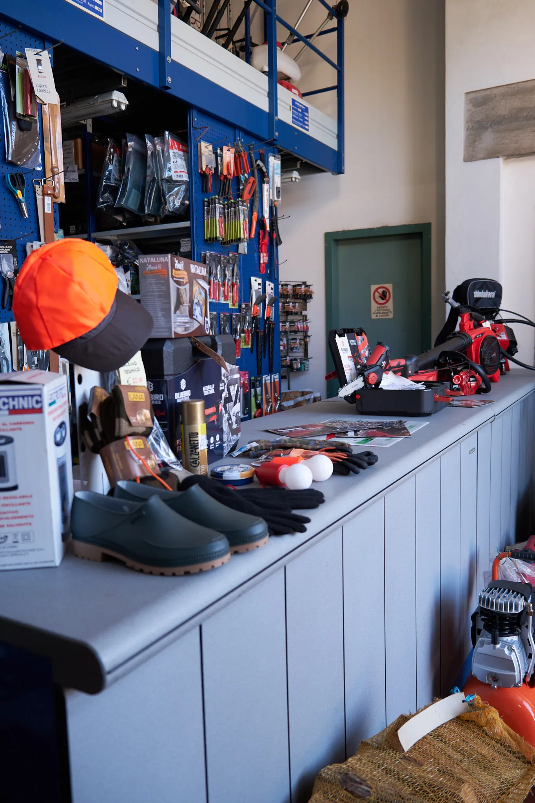
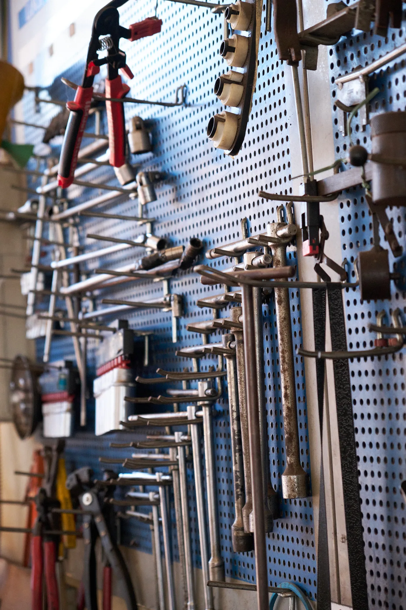
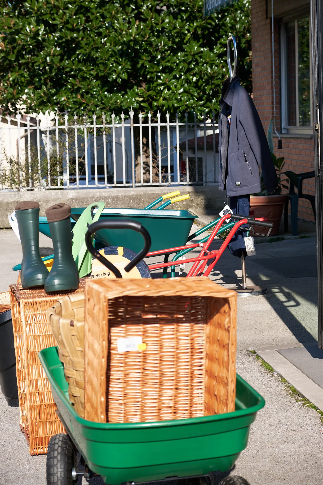
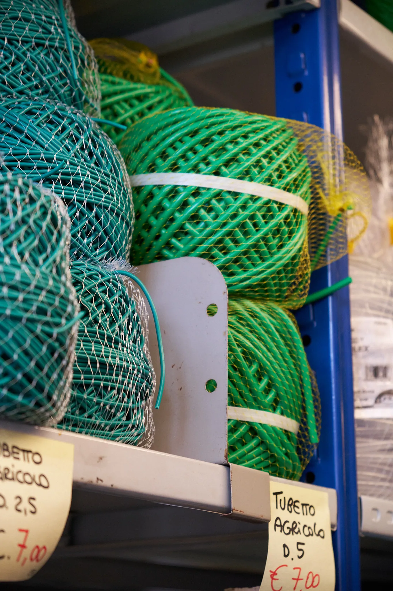
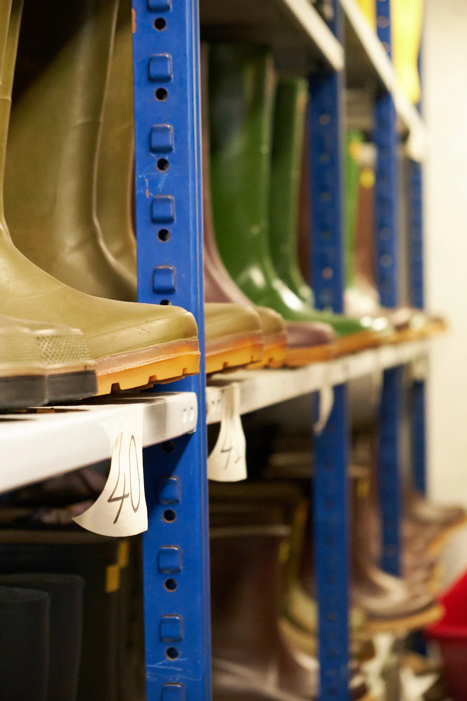

Soluzioni Complete per
Agricoltura e Giardinaggio
Vendita, riparazione e assistenza tecnica Dalla macchina agricola all'autofficina, dal gas GPL ai DPI.

Macchine e Attrezzature Agricole
Vendita trattori, motozappe, motocoltivatori e attrezzature agricole delle migliori marche. Riparazione professionale con ricambi originali. Assistenza tecnica qualificata per ogni esigenza.
Richiedi preventivo
Attrezzature per il Giardinaggio
Tagliaerba, decespugliatori, motoseghe, soffiatori e attrezzi manuali per professionisti e hobbisti. Concimi e prodotti per la cura del verde. Marchi: Shindaiwa, Echo, Gardena, Bosch e altri.
Richiedi info
Autofficina e Ricambi Auto
Tagliandi, freni, sospensioni, cambio olio e riparazioni complete per auto, furgoni e veicoli commerciali. Utilizziamo ricambi originali o equivalenti di alta qualità per garantire sicurezza e prestazioni.
Prenota tagliando
Ricambi Originali
Magazzino ricambi vasto e organizzato per trattori, motozappe, decespugliatori, attrezzature agricole e da giardinaggio. Riduciamo al minimo i tempi di fermo macchina con disponibilità immediata o ordinativi rapidi.
Verifica disponibilità
Assistenza Tecnica Specializzata
Riparazione e manutenzione trattori, decespugliatori, motoseghe, tagliaerba e attrezzature per il giardinaggio. Consulenza post-vendita con personale esperto pronto a risolvere ogni problema tecnico.
Chiedi assistenzaGas GPL e Carburanti Q8
Fornitura bombole gas GPL per uso domestico e professionale con servizio di sostituzione rapido. Distributore carburanti Q8 in Via per Camaiore. Passa durante gli orari di apertura.
Richiedi bombola
DPI e Sicurezza sul Lavoro
Abbigliamento tecnico, scarpe antinfortunistiche (U-Power, Diadora, Sir), guanti da lavoro, visiere, protezioni acustiche e DPI completi per agricoltori e operatori professionali. Sicurezza garantita.
Vedi catalogo
Consulenza Personalizzata
Assistenza tecnica per trovare la soluzione migliore alle tue esigenze. Preventivi gratuiti e senza impegno per acquisto macchine, riparazioni e forniture. Esperti a tua disposizione dal 1926.
Richiedi consulenza
Prodotti per l'Agricoltura
Concimi, fitofarmaci e prodotti per la cura delle colture. Attrezzi manuali, filo per legature, reti e accessori per ogni esigenza agricola. Qualità garantita per ottimi risultati.
Scopri prodottiMarchi di Qualità che Trattiamo
Collaboriamo con oltre 40 marchi leader nel settore agricolo e del giardinaggio


Hai bisogno di un preventivo?
Offriamo anche ordinativi speciali per articoli non disponibili in negozio. Contattaci per qualsiasi richiesta!
Consigli e Guide Tecniche
Scopri i nostri articoli con consigli pratici su manutenzione, riparazione e utilizzo delle attrezzature.